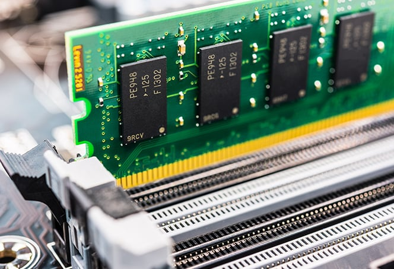

Memory, also known as RAM (Random Access Memory), is a type of computer hardware that allows for the temporary storage and quick access of data.
There are two main types of memory:
Memory capacity is measured in bytes (B), kilobytes (KB), megabytes (MB), gigabytes (GB), or terabytes (TB). The amount of memory needed depends on the specific computing needs and usage.
Memory speed, measured in MHz or GHz, is another important factor to consider. The faster the memory speed, the quicker data can be accessed and stored.
Memory channels refer to the number of physical pathways that can access the memory simultaneously. The more memory channels a system has, the faster it can access data.
Error-Correcting Code (ECC) memory is a type of memory that can detect and correct errors that occur during data transmission. It's often used in mission-critical systems where data accuracy is crucial.
Overall, memory plays a critical role in the performance and capabilities of a computer system. By understanding the different types, capacities, speeds, and features of memory, you can make informed decisions when upgrading or building a new computer.